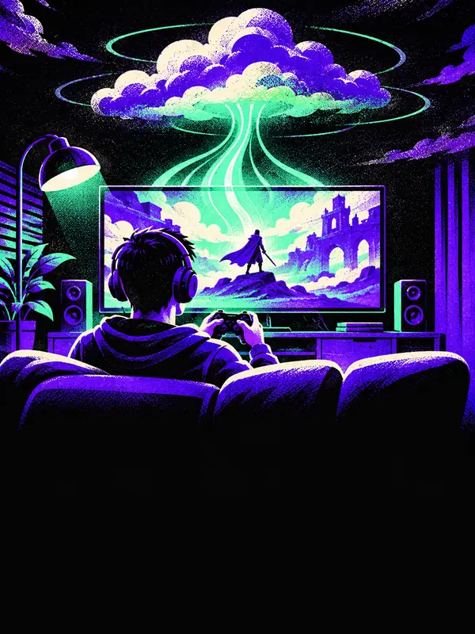
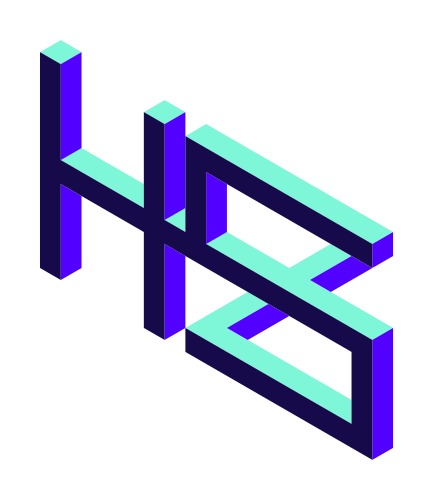
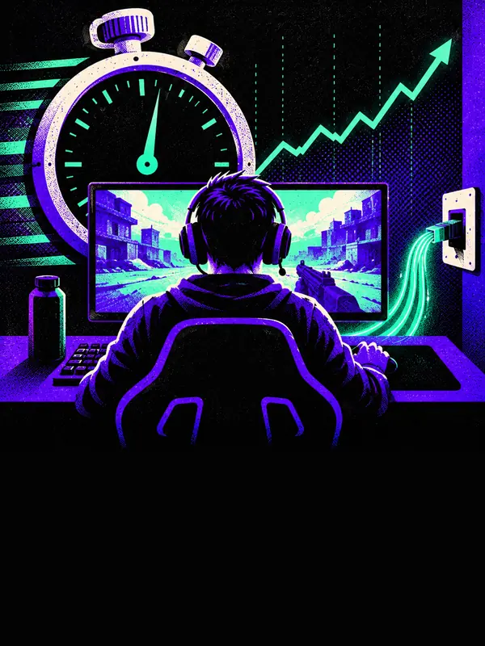
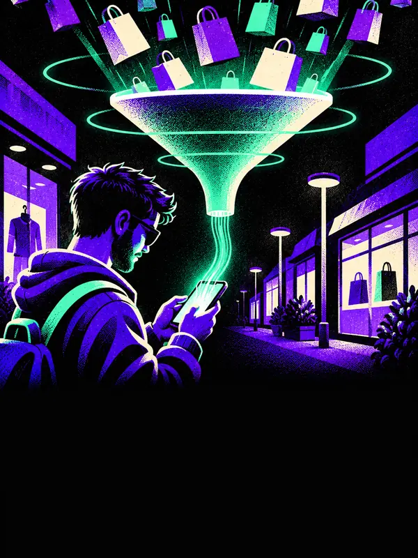
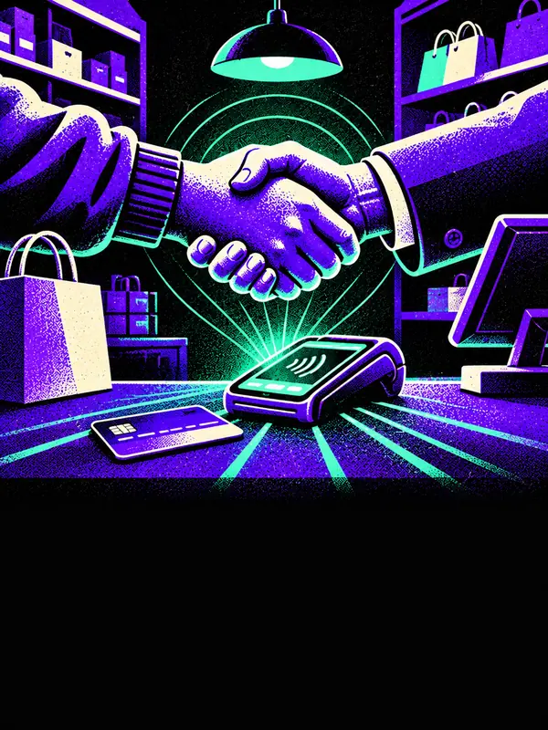
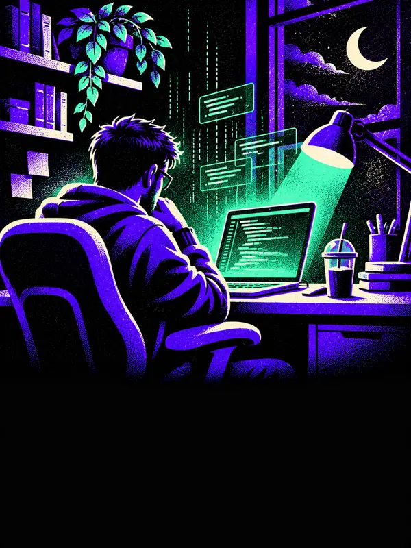
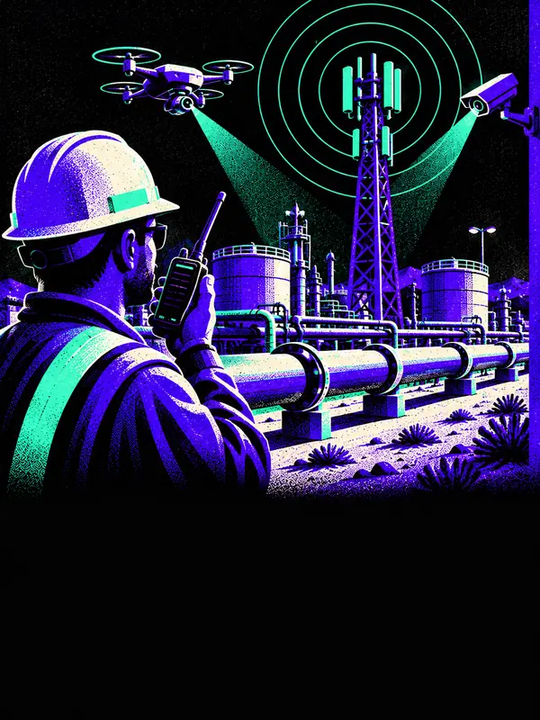
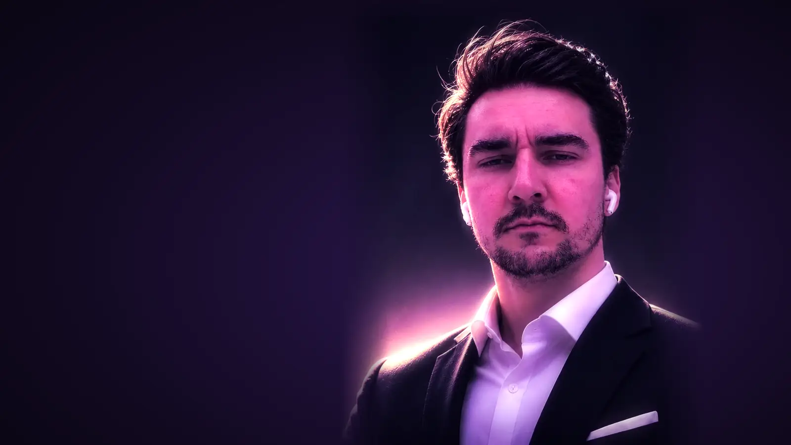

500+GeForce NOW subscribers at launch

Hamza SeinProduct manager at e&, previously Zain and Umniah
First to market twice in Jordan. Today I turn 5G, drones and computer vision into services businesses can buy.
Message me on LinkedInTwo of them firsts in Jordan. Every number on these cards is real.






Ask me about any of them. The stories behind the numbers are better than the numbers.
Push to talk, drones, network slicing and computer vision over 5G, packaged so a business can actually buy them.
Both of my firsts started as a gap in the market and ended up as products people paid for.
A rebuilt eShop, 0% instalments in the checkout, and a digital funnel that tripled subscriber growth.
I write the spec and make the product calls, Claude writes the code, and I test on my phone. It shows me exactly what I am asking engineers for.
Behind every launch, one person.

Nine years in telecom product. Mostly zero to one.
Small products made with Claude to stay close to the technology I manage. Pick one.
If you are taking something from zero to one, I would like to hear about it.